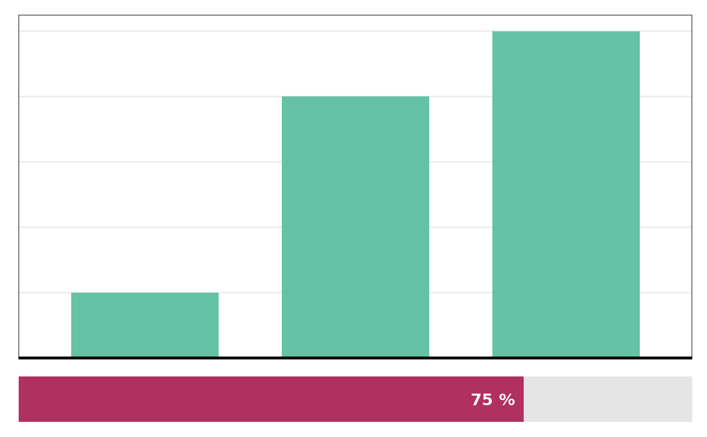
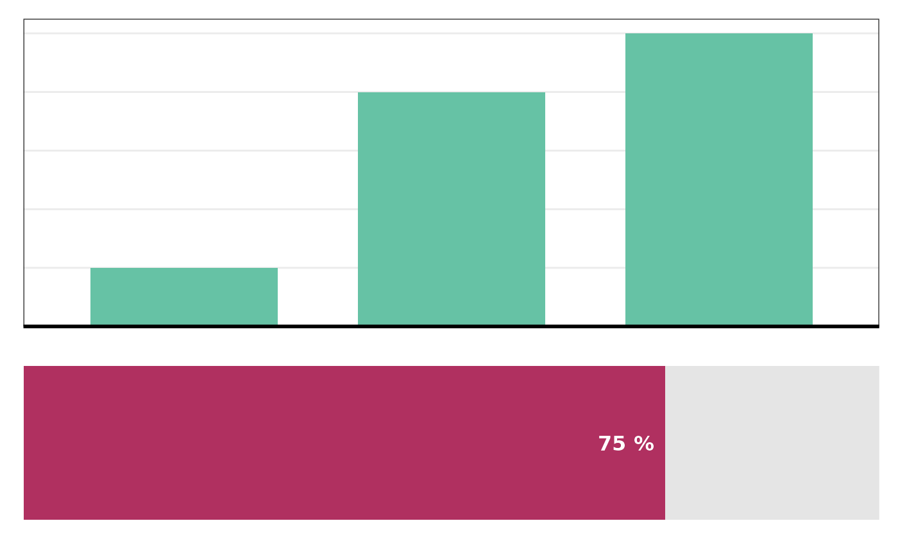

Generates a compact visualization of a signature plot with a proportion bar underneath.
Usage
sig_visualise_minified(
signature,
proportion,
format = fmt_percent(),
fgcol = "maroon",
bgcol = "grey90",
text_size_prop_label = NA,
heights = c(0.85, 0.15),
textcol = "black",
textcol_inverted = "white",
proportion_inversion_point = 0.5
)Arguments
- signature
A
sigversestyle signature data.frame.- proportion
Numeric value between 0 and 1 representing the proportion to display.
- format
Function to format the proportion label. Defaults to
fmt_percent(). Most common alternative is to usefmt_round().- fgcol
Color for the foreground (proportion) part of the bar. Defaults to
"maroon".- bgcol
Color for the background (remaining) part of the bar. Defaults to
"grey90".- text_size_prop_label
Numeric value for the text size of the proportion label in the bar. Defaults to
NA.- heights
Numeric vector specifying the relative heights of the signature plot and proportion bar.
- textcol
Colour of proportion label when
proportionis less thanproportion_inversion_point- textcol_inverted
Colour of proportion label when
proportiongreater thanproportion_inversion_point- proportion_inversion_point
The proportion above which the proportion will be rendered on top of progress bar, not
Examples
sig <- sigshared::example_signature()
sig_visualise_minified(sig, proportion = 0.75)
#> ! No exact channel set match found, sorting in order of appearance
#> ! No exact type set match found, sorting in order of appearance
#> ! No exact palette matches, returning default. It is highly recommended to supply a custom palette. See the `palette` argument

# Change size ratio between signature plot & bar
sig_visualise_minified(sig, proportion = 0.75, heights = c(0.6, 0.4))
#> ! No exact channel set match found, sorting in order of appearance
#> ! No exact type set match found, sorting in order of appearance
#> ! No exact palette matches, returning default. It is highly recommended to supply a custom palette. See the `palette` argument
